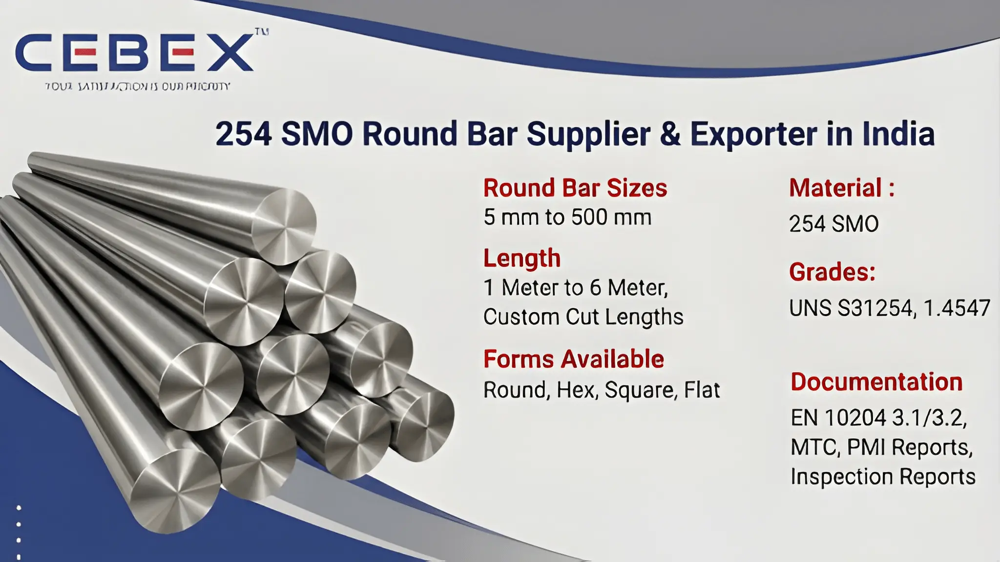

In highly corrosive industrial environments where superior pitting resistance, chloride stress corrosion resistance, and exceptional mechanical strength are critical, 254 SMO Round Bars are widely used for demanding engineering and process applications. As a leading 254 SMO Round Bar Supplier & Exporter in India, CEBEX STEEL INDIA supplies premium-quality 254 SMO round bars manufactured according to international ASTM, ASME, DIN, EN, and ISO standards for critical industrial sectors.
254 SMO is a high-alloy austenitic stainless steel containing elevated levels of molybdenum, nickel, and nitrogen, providing outstanding resistance against crevice corrosion, pitting corrosion, seawater attack, and aggressive chloride environments. Our 254 SMO Round Bars are extensively used in offshore platforms, marine engineering, desalination plants, chemical processing industries, pulp & paper plants, heat exchangers, petrochemical facilities, and power generation projects because of their excellent corrosion resistance and long-term operational reliability.
At CEBEX STEEL INDIA, we utilize advanced hot rolling, cold drawing, forging, machining, and finishing technologies to supply 254 SMO Round Bars with excellent dimensional accuracy, superior surface finish, and consistent metallurgical properties. Our products are trusted by EPC contractors, engineering consultants, fabrication companies, industrial buyers, and export clients across India, Africa, the Middle East, Europe, and Southeast Asia.

Choosing the right supplier for 254 SMO Round Bars is essential for ensuring long-term corrosion resistance, structural integrity, and operational reliability in aggressive industrial environments. CEBEX STEEL INDIA has established itself as a trusted 254 SMO Round Bar Supplier & Exporter in India through our strong technical expertise, strict quality systems, and dependable export capabilities.
We maintain complete traceability from raw material procurement to finished product dispatch and provide all materials with EN 10204 3.1/3.2 Mill Test Certificates, inspection reports, and export documentation. Our in-house quality department performs comprehensive testing including chemical analysis, tensile testing, hardness testing, PMI testing, ultrasonic inspection, and dimensional verification to ensure full compliance with ASTM and customer specifications.
Our export logistics team efficiently manages seaworthy packaging, export documentation, and worldwide shipping to ensure smooth and timely deliveries for industrial projects.
Our 254 SMO Round Bars are manufactured using premium-quality raw materials sourced from approved mills and processed through advanced manufacturing technologies to ensure superior corrosion resistance and mechanical performance.
The following table summarizes the technical specifications of our 254 SMO Round Bars:
| Feature | Specification / Detail |
|---|---|
| Standards | ASTM, ASME, DIN, EN, ISO |
| ASTM Specification | ASTM A276 / ASTM A479 |
| Grade | 254 SMO |
| UNS Number | UNS S31254 |
| WNR Number | 1.4547 |
| Diameter Range | 5 mm to 500 mm |
| Length | 1 Meter to 6 Meter, Custom Lengths |
| Forms Available | Round, Hex, Square, Flat |
| Surface Finish | Bright, Black, Polished, Peeled |
| Manufacturing Process | Hot Rolled, Cold Drawn, Forged |
| Documentation | EN 10204 3.1/3.2, MTC, PMI Reports, Inspection Reports |
Our product range includes a comprehensive selection of 254 SMO Round Bars suitable for highly corrosive industrial and marine applications. We supply hot rolled 254 SMO bars for structural and heavy engineering applications, cold drawn 254 SMO bars for precision machining requirements, forged 254 SMO bars for pressure equipment, and bright polished 254 SMO bars for applications requiring superior surface finish and dimensional precision.
We also supply custom-cut bars, forged billets, threaded bars, peeled bars, square bars, flat bars, hex bars, and machined 254 SMO components according to customer specifications and engineering drawings.
Material selection is critical in applications exposed to chlorides, seawater, acidic environments, and high-pressure operating conditions. We supply 254 SMO Round Bars manufactured according to internationally approved specifications for demanding industrial applications.
The following table summarizes our commonly supplied grade:
| Grade | UNS Number | Typical Applications | Standards |
|---|---|---|---|
| 254 SMO | S31254 | Offshore, Marine, Desalination, Chemical Processing | ASTM A276 / ASTM A479 |
All 254 SMO materials are sourced from reputed mills and supplied with complete traceability and inspection documentation.
Every 254 SMO Round Bar supplied by CEBEX STEEL INDIA includes complete chemical composition and mechanical property reports to ensure compliance with international standards and industrial project requirements.
| Element | Composition (%) |
|---|---|
| Chromium (Cr) | 19.5 – 20.5 |
| Nickel (Ni) | 17.5 – 18.5 |
| Molybdenum (Mo) | 6.0 – 6.5 |
| Nitrogen (N) | 0.18 – 0.22 |
| Carbon (C) | 0.02 Max |
| Manganese (Mn) | 1.0 Max |
| Silicon (Si) | 0.8 Max |
| Phosphorus (P) | 0.03 Max |
| Sulfur (S) | 0.01 Max |
| Iron (Fe) | Balance |
| Property | Value |
|---|---|
| Tensile Strength | 650 MPa Min |
| Yield Strength | 300 MPa Min |
| Elongation | 35% Min |
| Hardness | 210 HB Max |
Our quality department conducts spectrographic analysis, tensile testing, hardness testing, ultrasonic inspection, PMI testing, and dimensional verification using calibrated inspection equipment.
We supply 254 SMO Round Bars in diameters ranging from 5 mm to 500 mm with customized cutting and machining services according to project requirements. Standard supply lengths range from 1 meter to 6 meters while custom lengths are available upon request.
The following table illustrates approximate 254 SMO round bar weights:
| Diameter (mm) | Weight per Meter (kg) |
|---|---|
| 10 mm | 0.62 |
| 20 mm | 2.47 |
| 40 mm | 9.87 |
| 80 mm | 39.48 |
| 100 mm | 61.65 |
Additional machining services including chamfering, polishing, threading, CNC machining, and custom finishing are available according to customer requirements.
Our 254 SMO Round Bars are extensively used in industries requiring superior resistance to pitting corrosion, crevice corrosion, and chloride attack. Offshore and marine industries utilize 254 SMO bars for seawater systems, offshore platforms, subsea equipment, and marine structural applications because of their exceptional seawater corrosion resistance.
Chemical processing industries use 254 SMO Round Bars for pressure vessels, reactors, heat exchangers, and piping systems exposed to aggressive chemicals and chloride-rich environments. Desalination plants and power generation industries utilize 254 SMO materials for condenser systems, evaporators, and cooling equipment requiring long-term corrosion protection.
Our 254 SMO Round Bars are also widely used in pulp & paper plants, petrochemical facilities, fertilizer plants, pharmaceutical industries, and industrial engineering applications.
Quality assurance is one of the core strengths of our supply and export operations. Every 254 SMO Round Bar undergoes strict inspection and testing procedures including dimensional inspection, chemical analysis, tensile testing, hardness testing, PMI testing, ultrasonic testing, and visual inspection.
Our quality control department utilizes advanced inspection equipment including spectrometers, ultrasonic flaw detectors, hardness testing machines, and dimensional measurement systems to ensure compliance with ASTM, ASME, DIN, EN, and customer project requirements.
We understand the importance of secure packaging and timely deliveries for industrial and export projects. Our 254 SMO Round Bars are packed using export-grade wooden boxes, seaworthy wooden pallets, waterproof wrapping materials, and bundled packaging to ensure complete protection during international transportation.
Our export logistics department manages complete shipping documentation including commercial invoices, packing lists, certificates of origin, mill test certificates, and inspection reports for smooth customs clearance and worldwide shipping.
As a leading 254 SMO Round Bar Supplier & Exporter in India, we have built a strong reputation for supplying high-quality round bars to major projects across Africa. Our export team understands the unique requirements of African industries and ensures smooth, timely deliveries with complete documentation and compliance. From oil and gas to power and infrastructure, our round bars are trusted by clients in Nigeria, Egypt, Kenya, South Africa, Ethiopia and beyond. To learn more about our specialized solutions for the continent, visit our Africa 254 SMO Round Bar Exporter page.
In addition to 254 SMO Round Bars, we are also recognized as a leading supplier & exporter of Duplex 2205 Round Bars, Super Duplex Round Bars, Nickel Alloy Round Bars, Inconel Round Bars, Hastelloy Round Bars, Monel Round Bars, and Titanium Round Bars in India. These high-performance alloy round bars are engineered for severe marine and industrial applications requiring outstanding corrosion resistance, excellent mechanical strength, superior seawater resistance, thermal stability, and long-term reliability.
Our technical team is ready to assist you in selecting the perfect grade for your project.
Browse our full range:
Clients choose CEBEX STEEL INDIA because of our strong technical expertise, strict quality control systems, competitive export pricing, and dependable worldwide delivery capabilities. We provide flexible order quantities, custom machining services, fast production schedules, and responsive customer support for industrial and EPC projects.
Our engineering team assists clients in selecting the appropriate 254 SMO grades and specifications based on operating conditions, chloride exposure, corrosion resistance requirements, pressure conditions, and mechanical performance needs.
Our 254 SMO Round Bars comply with ASTM A276, ASTM A479, ASME, DIN, EN, and ISO standards with complete certification and traceability.
We supply UNS S31254 / 1.4547 / 254 SMO Round Bars in multiple sizes and finishes.
Yes, every shipment includes EN 10204 3.1/3.2 Mill Test Certificates along with inspection and testing reports.
We supply 254 SMO Round Bars from 5 mm to 500 mm diameter with custom cut lengths available.
Yes, we provide polishing, cutting, chamfering, threading, CNC machining, and custom finishing services according to customer specifications.